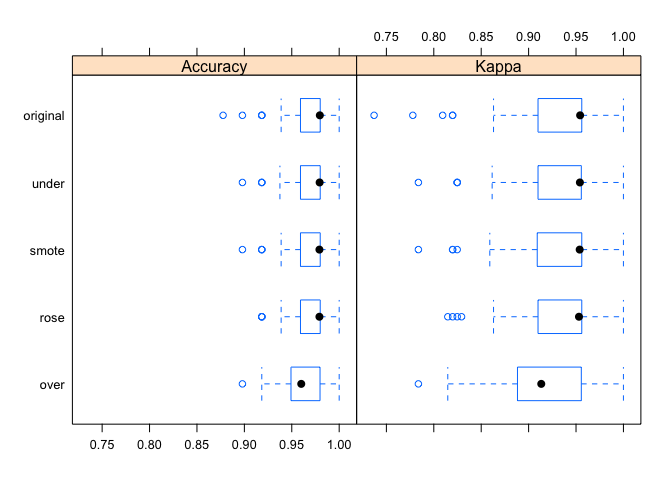
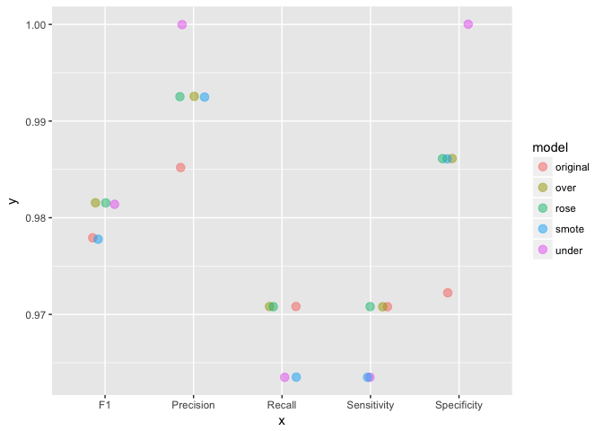

Dealing with unbalanced data in machine learning
In my last post, where I shared the code that I used to produce an example analysis to go along with my webinar on building meaningful models for disease prediction, I mentioned that it is advised to consider over- or under-sampling when you have unbalanced data sets. Because my focus in this webinar was on evaluating model performance, I did not want to add an additional layer of complexity and therefore did not further discuss how to specifically deal with unbalanced data.
But because I had gotten a few questions regarding this, I thought it would be worthwhile to explain over- and under-sampling techniques in more detail and show how you can very easily implement them with caret.
library(caret)
Unbalanced data
In this context, unbalanced data refers to classification problems where we have unequal instances for different classes. Having unbalanced data is actually very common in general, but it is especially prevalent when working with disease data where we usually have more healthy control samples than disease cases. Even more extreme unbalance is seen with fraud detection, where e.g. most credit card uses are okay and only very few will be fraudulent. In the example I used for my webinar, a breast cancer dataset, we had about twice as many benign than malignant samples.
summary(bc_data$classes)
## benign malignant
## 458 241
Why is unbalanced data a problem in machine learning?
Most machine learning classification algorithms are sensitive to unbalance in the predictor classes. Let’s consider an even more extreme example than our breast cancer dataset: assume we had 10 malignant vs 90 benign samples. A machine learning model that has been trained and tested on such a dataset could now predict “benign” for all samples and still gain a very high accuracy. An unbalanced dataset will bias the prediction model towards the more common class!
How to balance data for modeling
The basic theoretical concepts behind over- and under-sampling are very simple:
-
With under-sampling, we randomly select a subset of samples from the class with more instances to match the number of samples coming from each class. In our example, we would randomly pick 241 out of the 458 benign cases. The main disadvantage of under-sampling is that we lose potentially relevant information from the left-out samples.
-
With oversampling, we randomly duplicate samples from the class with fewer instances or we generate additional instances based on the data that we have, so as to match the number of samples in each class. While we avoid losing information with this approach, we also run the risk of overfitting our model as we are more likely to get the same samples in the training and in the test data, i.e. the test data is no longer independent from training data. This would lead to an overestimation of our model’s performance and generalizability.
In reality though, we should not simply perform over- or under-sampling on our training data and then run the model. We need to account for cross-validation and perform over- or under-sampling on each fold independently to get an honest estimate of model performance!
Modeling the original unbalanced data
Here is the same model I used in my webinar example: I randomly divide the data into training and test sets (stratified by class) and perform Random Forest modeling with 10 x 10 repeated cross-validation. Final model performance is then measured on the test set.
set.seed(42)
index <- createDataPartition(bc_data$classes, p = 0.7, list = FALSE)
train_data <- bc_data[index, ]
test_data <- bc_data[-index, ]
set.seed(42)
model_rf <- caret::train(classes ~ .,
data = train_data,
method = "rf",
preProcess = c("scale", "center"),
trControl = trainControl(method = "repeatedcv",
number = 10,
repeats = 10,
verboseIter = FALSE))
final <- data.frame(actual = test_data$classes,
predict(model_rf, newdata = test_data, type = "prob"))
final$predict <- ifelse(final$benign > 0.5, "benign", "malignant")
cm_original <- confusionMatrix(final$predict, test_data$classes)
Under-sampling
Luckily, caret makes it very easy to incorporate over- and under-sampling techniques with cross-validation resampling. We can simply add the sampling option to our trainControl and choose down for under- (also called down-) sampling. The rest stays the same as with our original model.
ctrl <- trainControl(method = "repeatedcv",
number = 10,
repeats = 10,
verboseIter = FALSE,
sampling = "down")
set.seed(42)
model_rf_under <- caret::train(classes ~ .,
data = train_data,
method = "rf",
preProcess = c("scale", "center"),
trControl = ctrl)
final_under <- data.frame(actual = test_data$classes,
predict(model_rf_under, newdata = test_data, type = "prob"))
final_under$predict <- ifelse(final_under$benign > 0.5, "benign", "malignant")
cm_under <- confusionMatrix(final_under$predict, test_data$classes)
Oversampling
For over- (also called up-) sampling we simply specify sampling = "up".
ctrl <- trainControl(method = "repeatedcv",
number = 10,
repeats = 10,
verboseIter = FALSE,
sampling = "up")
set.seed(42)
model_rf_over <- caret::train(classes ~ .,
data = train_data,
method = "rf",
preProcess = c("scale", "center"),
trControl = ctrl)
final_over <- data.frame(actual = test_data$classes,
predict(model_rf_over, newdata = test_data, type = "prob"))
final_over$predict <- ifelse(final_over$benign > 0.5, "benign", "malignant")
cm_over <- confusionMatrix(final_over$predict, test_data$classes)
ROSE
Besides over- and under-sampling, there are hybrid methods that combine under-sampling with the generation of additional data. Two of the most popular are ROSE and SMOTE.
From Nicola Lunardon, Giovanna Menardi and Nicola Torelli’s “ROSE: A Package for Binary Imbalanced Learning” (R Journal, 2014, Vol. 6 Issue 1, p. 79): “The ROSE package provides functions to deal with binary classification problems in the presence of imbalanced classes. Artificial balanced samples are generated according to a smoothed bootstrap approach and allow for aiding both the phases of estimation and accuracy evaluation of a binary classifier in the presence of a rare class. Functions that implement more traditional remedies for the class imbalance and different metrics to evaluate accuracy are also provided. These are estimated by holdout, bootstrap, or cross-validation methods.”
You implement them the same way as before, this time choosing sampling = "rose"…
ctrl <- trainControl(method = "repeatedcv",
number = 10,
repeats = 10,
verboseIter = FALSE,
sampling = "rose")
set.seed(42)
model_rf_rose <- caret::train(classes ~ .,
data = train_data,
method = "rf",
preProcess = c("scale", "center"),
trControl = ctrl)
final_rose <- data.frame(actual = test_data$classes,
predict(model_rf_rose, newdata = test_data, type = "prob"))
final_rose$predict <- ifelse(final_rose$benign > 0.5, "benign", "malignant")
cm_rose <- confusionMatrix(final_rose$predict, test_data$classes)
SMOTE
… or by choosing sampling = "smote" in the trainControl settings.
From Nitesh V. Chawla, Kevin W. Bowyer, Lawrence O. Hall and W. Philip Kegelmeyer’s “SMOTE: Synthetic Minority Over-sampling Technique” (Journal of Artificial Intelligence Research, 2002, Vol. 16, pp. 321–357): “This paper shows that a combination of our method of over-sampling the minority (abnormal) class and under-sampling the majority (normal) class can achieve better classifier performance (in ROC space) than only under-sampling the majority class. This paper also shows that a combination of our method of over-sampling the minority class and under-sampling the majority class can achieve better classifier performance (in ROC space) than varying the loss ratios in Ripper or class priors in Naive Bayes. Our method of over-sampling the minority class involves creating synthetic minority class examples.”
ctrl <- trainControl(method = "repeatedcv",
number = 10,
repeats = 10,
verboseIter = FALSE,
sampling = "smote")
set.seed(42)
model_rf_smote <- caret::train(classes ~ .,
data = train_data,
method = "rf",
preProcess = c("scale", "center"),
trControl = ctrl)
final_smote <- data.frame(actual = test_data$classes,
predict(model_rf_smote, newdata = test_data, type = "prob"))
final_smote$predict <- ifelse(final_smote$benign > 0.5, "benign", "malignant")
cm_smote <- confusionMatrix(final_smote$predict, test_data$classes)
Predictions
Now let’s compare the predictions of all these models:
models <- list(original = model_rf,
under = model_rf_under,
over = model_rf_over,
smote = model_rf_smote,
rose = model_rf_rose)
resampling <- resamples(models)
bwplot(resampling)

library(dplyr)
comparison <- data.frame(model = names(models),
Sensitivity = rep(NA, length(models)),
Specificity = rep(NA, length(models)),
Precision = rep(NA, length(models)),
Recall = rep(NA, length(models)),
F1 = rep(NA, length(models)))
for (name in names(models)) {
model <- get(paste0("cm_", name))
comparison[comparison$model == name, ] <- filter(comparison, model == name) %>%
mutate(Sensitivity = model$byClass["Sensitivity"],
Specificity = model$byClass["Specificity"],
Precision = model$byClass["Precision"],
Recall = model$byClass["Recall"],
F1 = model$byClass["F1"])
}
library(tidyr)
comparison %>%
gather(x, y, Sensitivity:F1) %>%
ggplot(aes(x = x, y = y, color = model)) +
geom_jitter(width = 0.2, alpha = 0.5, size = 3)

With this small dataset, we can already see how the different techniques can influence model performance. Sensitivity (or recall) describes the proportion of benign cases that have been predicted correctly, while specificity describes the proportion of malignant cases that have been predicted correctly. Precision describes the true positives, i.e. the proportion of benign predictions that were actual from benign samples. F1 is the weighted average of precision and sensitivity/ recall.
Here, all four methods improved specificity and precision compared to the original model. Under-sampling, over-sampling and ROSE additionally improved precision and the F1 score.
This post shows a simple example of how to correct for unbalance in datasets for machine learning. For more advanced instructions and potential caveats with these techniques, check out the excellent caret documentation.
If you are interested in more machine learning posts, check out the category listing for machine_learning on my blog.
sessionInfo()
## R version 3.3.3 (2017-03-06)
## Platform: x86_64-apple-darwin13.4.0 (64-bit)
## Running under: macOS Sierra 10.12.3
##
## locale:
## [1] en_US.UTF-8/en_US.UTF-8/en_US.UTF-8/C/en_US.UTF-8/en_US.UTF-8
##
## attached base packages:
## [1] stats graphics grDevices utils datasets methods base
##
## other attached packages:
## [1] tidyr_0.6.1 dplyr_0.5.0 randomForest_4.6-12
## [4] caret_6.0-73 ggplot2_2.2.1 lattice_0.20-34
##
## loaded via a namespace (and not attached):
## [1] Rcpp_0.12.9 nloptr_1.0.4 plyr_1.8.4
## [4] class_7.3-14 iterators_1.0.8 tools_3.3.3
## [7] digest_0.6.12 lme4_1.1-12 evaluate_0.10
## [10] tibble_1.2 gtable_0.2.0 nlme_3.1-131
## [13] mgcv_1.8-17 Matrix_1.2-8 foreach_1.4.3
## [16] DBI_0.5-1 yaml_2.1.14 parallel_3.3.3
## [19] SparseM_1.74 e1071_1.6-8 stringr_1.2.0
## [22] knitr_1.15.1 MatrixModels_0.4-1 stats4_3.3.3
## [25] rprojroot_1.2 grid_3.3.3 nnet_7.3-12
## [28] R6_2.2.0 rmarkdown_1.3 minqa_1.2.4
## [31] reshape2_1.4.2 car_2.1-4 magrittr_1.5
## [34] backports_1.0.5 scales_0.4.1 codetools_0.2-15
## [37] ModelMetrics_1.1.0 htmltools_0.3.5 MASS_7.3-45
## [40] splines_3.3.3 assertthat_0.1 pbkrtest_0.4-6
## [43] colorspace_1.3-2 labeling_0.3 quantreg_5.29
## [46] stringi_1.1.2 lazyeval_0.2.0 munsell_0.4.3